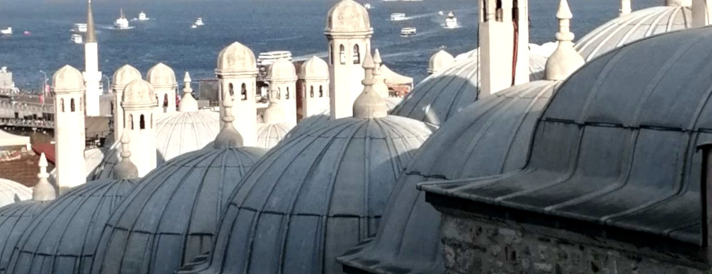

What places feel close to you, yet remain unexplored—like rooftops?
“ The dome that I have raised, a reflection of the heavens' sphere,
Stands not on power's foundation, but on faith, a solace to my heart.
The marble gleams, the high arches touch the very air, Yet a single breath of health is a treasure beyond compare.”